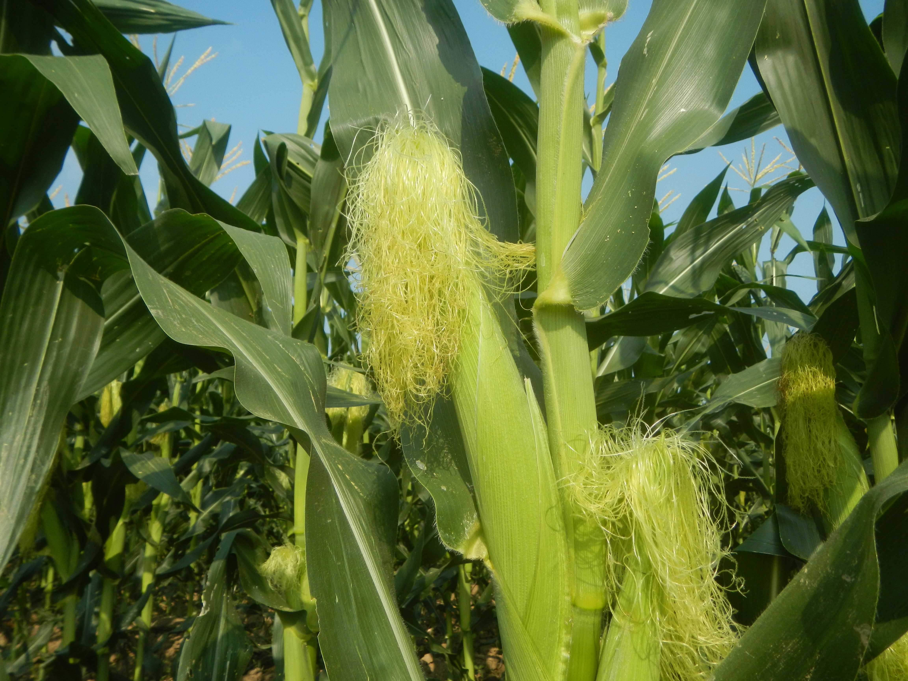

Practical tools for better-informed farming
Plan smarter.
Farm better.
Explore crop information, plan around growing seasons, estimate farm inputs and compare crop profiles — all in one place.

Start exploring
Featured crop profiles
Browse crop seasons, soil preferences and practical information from the existing project dataset.
One connected farm guide
Tools to help plan your next steps
Use the information and working features already included in AgroGuide Pro.
Crop library
Search ten crop profiles with photographs, seasons, soil preferences and detailed notes.
Explore cropsFarm calculators
Estimate fertilizer requirements, manpower and input costs using the crop data.
Open calculatorSoil checker
Find crop profiles matching a selected soil type and growing season.
Check soil fitSeason planner
Review recorded sowing, irrigation, fertilizer and harvest timeline notes.
Plan a seasonCrop comparison
Compare crop input data, yield, water needs, soil and manpower side by side.
Compare cropsFarming tools & tips
Find shortcuts to existing tools and practical notes from the crop records.
Browse toolsMake the data work for you
Ready to explore your farm planning toolkit?
Start with a crop profile, or use a calculator to estimate requirements for your selected area.